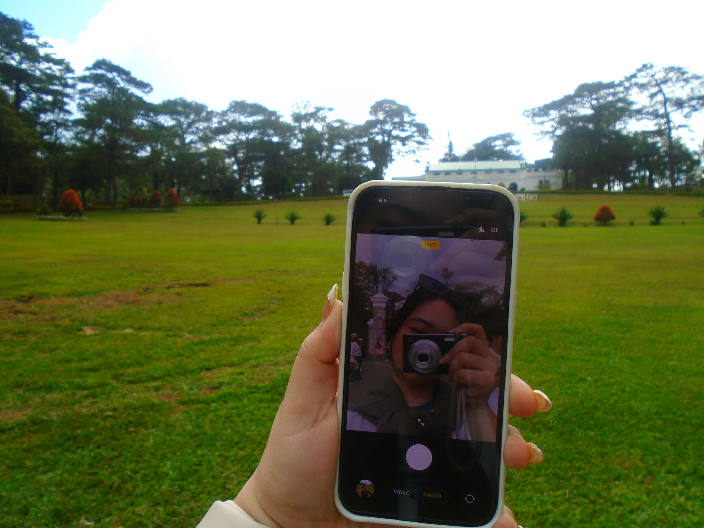
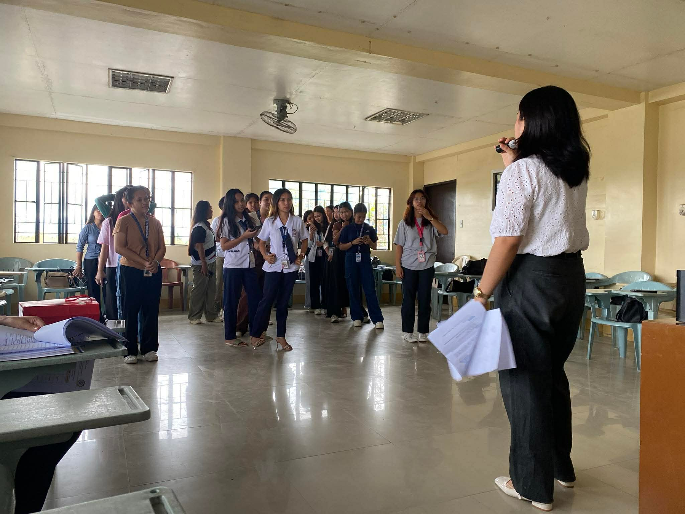

01 // Daily communication



Digital connection
Technology plays a big role in my daily communication. I use apps like Messenger and Google meet to communicate with my classmates, teachers, and family. These tools make communication faster and more convenient.